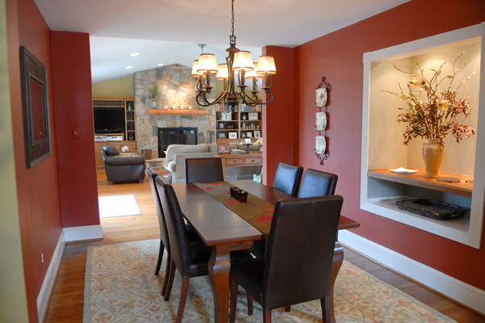

Putting people first, above all else.
At HomePro & Design we know there may be times when things do not go as planned. And if that happens, we promise to use our best efforts to address the issue until it is resolved.
HomePro & Design makes this pledge because we know the experience of going through the home improvement process is as important as the construction itself.
We Pledge to Take Care of Our Customers from Start to Finish.
Before Construction Begins:
- Handle all licensing, permitting and insurance requirements.
- Introduce Project Managers to customers and supply customers with contact information (emails and cell phone numbers) of all the people involved in their project.
- Work closely with customers to create reasonable project schedules that work with their daily lives and particular needs, for example, starting and ending times.
- Provide Project Notebook with tabs/room for things like: construction timelines, what to expect, items to think about, specifications of product choices/brands, supplier contact information, paint colors, architectural drawings, warranty information, and user manuals.
- Install (with homeowner’s approval) lock boxes on doors so customers do not need to be home during construction.
- Make sure that customers’ expectations are realistic and educate them about the time and financial implications of the change order process.
- Inform customers’ neighbors about pending construction and give the neighbors HomePro's’ contact information for any questions or concerns they may have.
During Construction:
- Treat each customer’s property as if it were our own. Whenever possible, enter through a basement or back door, and when that’s not possible, cover floors and limit the time going through main entrances and rooms.
- Have a Project Manager always available who is responsible for overseeing the construction. Additionally, all workers are encouraged by HomePro to be as helpful as possible and to answer any questions from our clients about their particular service.
- Maintain presentable work area by using protective coverings and cleaning up after ourselves on a daily basis as best as we can. We continue to explore new developments in technologies that limit dust and will implement those that are proven effective and reliable. We are careful to make sure that at the end of the day the inside and outside of your home are as clean as possible.
- Work with our customers to help them make decisions about when and what items need to be selected and ordered to keep the project moving in a timely fashion.
- Respect customer’s time by returning calls and emails within a 24-hour period, responding quickly to emergencies, and showing up at agreed upon times.
- Use email and other appropriate technology to disseminate information (including schedules, drawings, photos) quickly to all parties on the project.
- Provide access to HomePro preferred vendors and suppliers, or accommodate homeowner-selected vendors and suppliers.
After Construction is completed:
- Help gather any missing information customers need to complete their Project Notebooks.
- Provide a cleaning crew at the end of the project for any part of client’s house that has been affected by the construction.
- Schedule a final walk-through at the end of each project with the homeowner and Project Manager. Develop an agreed upon punch list and complete the list in a timely fashion.
- Offer prompt response to warranty issues should any arise.
- Request that every customer complete a satisfaction survey so that we can integrate helpful comments into the construction process and maintain customer service as HomePro’ first priority.
- Offer a complimentary Handyman-for-a-Day in appreciation for referrals to friends and family who become customers.